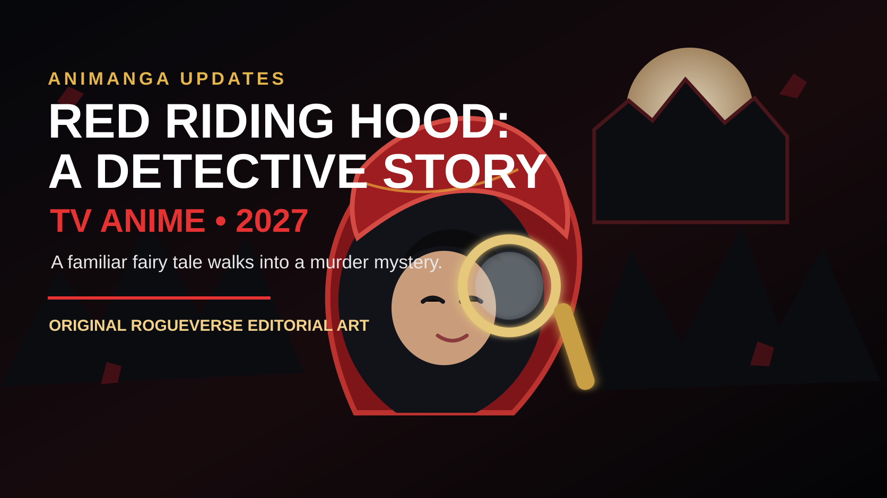

OLD MAN OTAKU / ANIME NEWS • AUGUST 10, 2026
Red Riding Hood Becomes a Detective in a New 2027 TV Anime
Red Riding Hood: A Detective Story is officially getting a television anime in 2027, turning one of the world’s most familiar fairy-tale figures into the lead of a fantasy-mystery series.

A fairy tale everyone knows is getting a new job description.
Red Riding Hood: A Detective Story has been officially announced as a TV anime for 2027. The reveal landed on August 10, 2026, making this a genuine new-project announcement rather than another trailer, cast update or release-date adjustment for a production that was already on the calendar.
The hook is immediate: Little Red Riding Hood is reimagined as a detective. Instead of simply walking through the woods toward grandmother’s house, this version places her inside a fantasy-mystery framework where crimes, clues and suspects emerge from fairy-tale worlds and characters audiences already recognize.
That makes the adaptation one of the more distinctive anime announcements in the current 2027 pipeline. It is not relying on an unfamiliar fantasy vocabulary to sell its world. The audience already knows the icons. The mystery comes from asking what happens when those icons are rearranged into cases.
What has actually been confirmed?
The August 10 announcement confirms the most important top-line facts: Red Riding Hood: A Detective Story is receiving a television anime adaptation, and the series is planned for 2027.
The announcement also establishes the core premise. This is a fantasy-mystery story built around Red Riding Hood as an investigator whose cases involve familiar fairy-tale settings and figures.
At the time of this report, the announcement does not provide a specific 2027 premiere season or date. Production details, cast information and other major staff information were also not included in the material RogueVerse is using as the basis for this report. That distinction matters because early anime announcements often arrive in stages. A project can be real and officially greenlit while still being months away from revealing who is animating it, who is performing the characters and when exactly it will air.
So the clean version is simple: TV anime confirmed, 2027 confirmed, exact window still open.
Why the premise works so well
Fairy tales are unusually useful raw material for mystery fiction because the audience arrives with a built-in memory of the world.
Red Riding Hood. The wolf. The grandmother. The woods. A path that should not be left. A stranger who should not be trusted.
Those details are already lodged in popular culture. A detective story can exploit that familiarity. The viewer thinks they know the rules, so the story can turn recognition into misdirection. A character who seems harmless because of the traditional version may become suspicious. A villain may have a different motive. A setting that once functioned as background scenery can become a crime scene.
That is where this concept could separate itself from a standard fantasy anime. The attraction is not simply “fairy tales, but darker.” That idea has been used many times. The more interesting possibility is “fairy tales as evidence.” Every familiar object, role and story beat becomes something the detective and the audience can interrogate.
Red Riding Hood is an especially smart choice for the lead
Red Riding Hood already comes with the visual language of a protagonist. The red cloak is instantly identifiable. The forest gives the story an atmospheric home base. The wolf provides a natural symbol for danger, deception and fear.
Turning that character into a detective also changes her traditional role. She is no longer simply the person being warned about danger. She becomes the person actively investigating it.
That reversal gives the anime a strong thematic foundation before a single episode has aired. A figure remembered as vulnerable can now be defined by observation, logic and agency.
It also creates obvious room for episodic storytelling. A fairy-tale detective can move from kingdom to forest to village to castle, letting each new case introduce a different cluster of familiar characters. Cinderella, witches, princes, cursed objects, talking animals and enchanted locations all become potential pieces of a larger mystery anthology.
The big question: how dark will it go?
The word “detective” changes expectations.
A fantasy series can be light, whimsical or adventurous. A mystery series implies secrets. Crime pushes that further. Once an adaptation starts asking who committed an act, why they did it and what evidence was left behind, the fairy-tale setting can quickly become eerie.
That does not mean the anime will necessarily be grim. The announcement does not establish tone in enough detail to make that claim. The series could lean playful, cozy, macabre, suspenseful or somewhere between those extremes.
But the concept naturally supports tonal flexibility. One episode could revolve around a clever theft. Another could involve a disappearance. Another could turn a familiar story into a genuine murder mystery. The fairy-tale framework gives the production enormous range if the writing takes advantage of it.
Why this could appeal beyond anime mystery fans
The strongest adaptations often have a hook that can be understood in one sentence. This one does.
Little Red Riding Hood solves crimes inside fairy tales.
That is unusually easy to communicate to someone who has never heard of the source material. There is no dense terminology to memorize before the premise becomes interesting. The concept sells itself before the viewer knows the cast, studio or opening theme.
That accessibility gives the anime potential crossover appeal among viewers who enjoy fantasy, crime stories, fairy-tale reinterpretations and episodic mysteries. It also provides a visual identity that should be easy to market: red cloak, storybook world, clues, shadows, forests and familiar icons reshaped into something suspicious.
What RogueVerse is watching next
The next round of information will determine what kind of project this really is.
The animation studio will be especially important because the setting could succeed through atmosphere as much as movement. A fairy-tale mystery benefits from expressive background design, strong lighting, detailed props and environments that hide visual clues without advertising them too loudly.
The director and series-composition staff will matter just as much. Mystery stories depend on control. Information has to be withheld without feeling dishonest. Clues need to exist before the solution is revealed. Familiar fairy-tale knowledge should help the audience participate rather than simply act as decoration.
Voice casting will reveal another piece of the intended tone. A sharper, more analytical Red Riding Hood would sell one version of the concept; a playful, eccentric detective would create another.
And, of course, the first proper teaser or trailer will answer the question artwork alone cannot: what does this world feel like when it moves?
Where it sits in the 2027 anime wave
The 2027 calendar is still taking shape, and that is precisely why this announcement is worth flagging now. Many of the most visible stories currently circulating are updates to projects audiences already know are coming. This one adds a genuinely new adaptation to the board.
That gives Red Riding Hood: A Detective Story a small but meaningful advantage. It enters the conversation as a concept rather than as a sequel obligation. Nobody needs to finish three previous seasons first. Nobody needs to remember a two-year-old cliffhanger. Viewers can approach it from the beginning.
Whether it becomes a major 2027 title will depend on execution, but the elevator pitch has already done its job.
RogueVerse verdict: keep this one on the board
It is too early to judge the anime itself. There is no episode footage, no exact premiere date and not enough production information yet for a serious quality forecast.
But as an announcement, this is one of the cleaner hooks in the new-project pile.
Fairy tales are universal. Mysteries are naturally interactive. Red Riding Hood is instantly recognizable. Put those pieces together and the anime has a premise that can attract viewers before the marketing campaign even fully begins.
The next update will be the important one. Once the staff, cast, studio and first moving footage arrive, RogueVerse can start asking the harder questions.
For now, put it on the 2027 watch list.
Source
Crunchyroll News: Red Riding Hood: A Detective Story TV Anime Announced for 2027